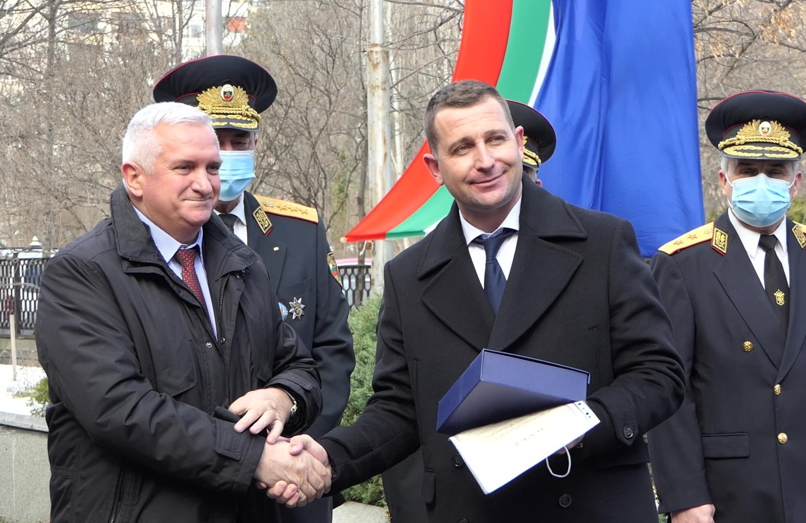

Пожарна Безопасност - област Бургас

За 26-и пореден път бяха наградени
победителите в конкурса „Пожарникар на годината”
19 февруари 2021г.
Най-добрите огнеборци, спасители и доброволци за 2020 година получиха своите награди на кратка церемония в двора на ГД „Пожарна безопасност и защита на населението“.
„Годината, която измина, бе сложна, но пожарникарите и спасителите съумяха да се справят с предизвикателствата, включително с дейностите, свързани със здравната криза. Лично се убедих в работата на екипа на комисар Николай Вълчев, при големите пожари от последното лято на територията на област Хасково. Щастлив съм, че именно той е носител на тази престижна награда“, каза министърът на вътрешните работи Христо Терзийски в поздрава си към отличените в конкурса „Пожарникар на годината 2020 г.“.
На награждаването присъстваха също заместник-главният секретар на МВР главен комисар Стоян Темелакиев, директорът на ГДПБЗН главен комисар Николай Николов, заместник-кметът на Столична община Ангел Джоргов и председателят на Националната асоциация на доброволците в Република България д-р Ясен Цветков.
Традиционният конкурс „Пожарникар на годината” има за цел да покаже съвременното лице и утвърди постиженията на професията в осигуряването на пожарната безопасност, спасяването и защитата при бедствия.
Комплексен победител и носител на титлата пожарникар на годината стана комисар Николай Вълчев – директор на РДПБЗН-Хасково. През изминалата година той лично ръководи дейностите по погасяване на мащабните полски и горски пожари на територията на общините Свиленград, Любимец и Ивайловград. Комисар Вълчев бе награден с почетното отличие на вътрешното министерство „За доблест и заслуги“ I степен.
Колективна награда бе присъдена на мл. инспектор Надеждю Агов и мл. инспектор Красимир Добранов – водолази в сектор СОД към РДПБЗН-Пловдив. На 2 май двамата успяват да освободят повреден изпускателен кран на язовир Бяла чешма и по този начин да спасят от наводнение град Павел баня.

